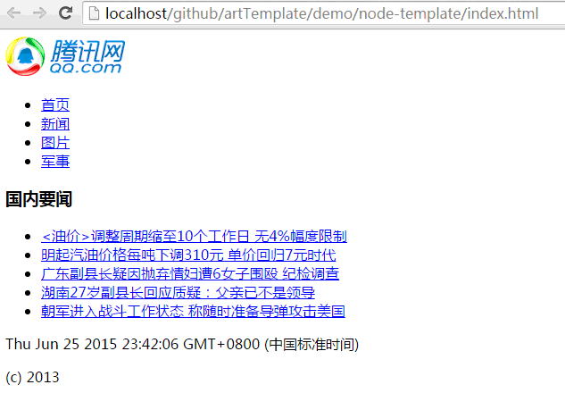

$belong[layout.vm]

<section class="container row">
    <div class="col-md-3">
        <div id="sidebar" class="my_sidebar">
            <ul class="nav">
                <li class="sidebar_head_li"><a href="#introduce">简介</a></li>
                <li class="sidebar_head_li"><a href="#include">模板引用和包含</a></li>
                <li class="sidebar_head_li"><a href="#request">服务端内置对象</a></li>
                <li class="sidebar_head_li"><a href="#diy">自定义引擎</a></li>
            </ul>
            $include[ads.html]
        </div>
    </div>

    <div class="page_content col-md-9" role="main">
        <section id="introduce">
            <h2>简介</h2>
            <p>书写静态页面时候，我们常常会需要循环类似的HTML结构，以及一个项目中公用的页面片段，
            模板引擎部分主要就是为了解决这种HTML等资源的代码公用问题而产生的。</p>
            <p>f2e-server使用 <a href="http://underscorejs.org/#template" target="_blank">underscore.template</a>, 作为默认的模板引擎, 因为它足够简单。</p>
            <p>默认的： <code>&lt;%%&gt;</code> 中间的部分是服务端执行的代码, <code>&lt;%=%&gt;</code>是将服务端对象的toString()拼接到响应中, <code>&lt;%-%&gt;</code>HTML-escape</p>
            <p>例如：</p>
            <pre class="language-javascript"><code>&lt;ul&gt;
    &lt;% var t=0, arr = ["使用入门","WEB服务器","模板引擎","中间件","项目输出","代理","其他"]; 
    for(; t&lt;arr.length; t++){%&gt;
    &lt;li&gt;&lt;%=arr[t]%&gt;&lt;/li&gt;
    &lt;%}%&gt;
&lt;/ul&gt;</code></pre>
            <p>服务端输出结果为:</p>
            <pre class="language-markup"><code>&lt;ul&gt;
    &lt;li&gt;使用入门&lt;/li&gt;
    &lt;li&gt;WEB服务器&lt;/li&gt;
    &lt;li&gt;模板引擎&lt;/li&gt;
    &lt;li&gt;中间件&lt;/li&gt;
    &lt;li&gt;项目输出&lt;/li&gt;
    &lt;li&gt;代理&lt;/li&gt;
    &lt;li&gt;其他&lt;/li&gt;
&lt;/ul&gt;</code></pre>
            <p>当然你可以书写更复杂的循环结构，然而只需要修改元数据就能批量生产，从而避免了大量重复冗余的HTML代码
            （最重要的：你可以使用项目输出功能将书写的源码输出成为普通的HTML文件, 而且css,js等所有文本类型资源均被支持）</p>
        </section>
        
        <section id="include">
            <h2>模板引用和包含</h2>
            <p>如果说: 上述的模板引擎是为了在一个页面内部快速公共化代码， 引用和包含则方便了整个项目组织代码片段： <br>
            如下图所示代码片段: </p>
            <ul>
                <li>include是为了获取一个公共代码片段拿来拼接使用, 例如你的很多页面都使用到了
                    <code>header.html</code> 中的片段</li>
                <li>另外，如果你的项目中很多页面都具有相同的头和尾, 也就是说所有页面的基本框架是一样的,
                    belong则可以引入一个公共的模板页面，把目前文件的html代码放在模板中生成一个完整的页面</li>
                <li>关于模板引用和包含，可以参见 f2e-server.com 源码实例: <a href="https://github.com/shy2850/node-server/tree/gh-pages" target="_blank">https://github.com/shy2850/node-server/tree/gh-pages</a></li>
            </ul>
            <p>page.html</p>
            <pre class="language-javascript"><code>&#36;belong[layout.html]
&lt;ul&gt;
    &lt;% var t=0, arr = ["使用入门","WEB服务器","模板引擎","中间件","项目输出","代理","其他"]; 
    for(; t&lt;arr.length; t++){%&gt;
    &lt;li&gt;&lt;%=arr[t]%&gt;&lt;/li&gt;
    &lt;%}%&gt;
&lt;/ul&gt;</code></pre>
            <p>layout.html</p>
            <pre class="language-markup"><code>&lt;!DOCTYPE html&gt;
&lt;html lang="en"&gt;
&lt;head&gt;
    &lt;meta charset="UTF-8"&gt;
    &lt;title&gt;Document&lt;/title&gt;
&lt;/head&gt;
&lt;body&gt;
    &#36;include[header.html]
    &#36;[placeholder]
&lt;/body&gt;
&lt;/html&gt;</code></pre>
            <p>header.html</p>
            <pre class="language-markup"><code>&lt;h2 style="text-align:center"&gt;我是header&lt;/h2&gt;</code></pre>
            <p>通过f2e-server服务器访问page.html时, 生成的结果代码如下：</p>
            <pre class="language-markup"><code>&lt;!DOCTYPE html&gt;
&lt;html lang="en"&gt;
&lt;head&gt;
    &lt;meta charset="UTF-8"&gt;
    &lt;title&gt;Document&lt;/title&gt;
&lt;/head&gt;
&lt;body&gt;
    &lt;h2 style="text-align:center"&gt;我是header&lt;/h2&gt;

&lt;ul&gt;
    &lt;li&gt;列表1&lt;/li&gt;
    &lt;li&gt;列表2&lt;/li&gt;
    &lt;li&gt;列表3&lt;/li&gt;
    &lt;li&gt;列表4&lt;/li&gt;
    &lt;li&gt;列表5&lt;/li&gt;
    &lt;li&gt;列表6&lt;/li&gt;
&lt;/ul&gt;
&lt;/body&gt;
&lt;/html&gt;</code></pre>
            <p>你还可以修改<code>conf.js</code> 中相关配置，支持不同的关键字替换内容 <span class="not-important bg-primary">(扩展功能, 可不做了解)</span></p>
            <p>include和belong字段可以配置正则字符串或者正则对象, 其中的第一组分组获得的结果即为索引文件名</p>
            <pre class="language-javascript"><code>exports[localhost] = {
    include: "\\$include\\[[\"\\s]*([^\"\\s]+)[\"\\s]*\\]",
    placeholder: "$[placeholder]",
    belong: "\\$belong\\[[\"\\s]*([^\"\\s]+)[\"\\s]*\\]"
};</code></pre>
        </section>

        <section id="request">
            <h2>服务端内置对象 <span class="not-important bg-primary">(扩展功能, 可不做了解)</span></h2>
            <ul class="task-list">
                <li>request: 包转完成的当前请求
                    <ul class="task-list">
                        <li>request.data: GET请求参数包装, 如 <code>request.data.type</code> 表示GET请求参数type的值</li>
                        <li>request.post: POST请求参数包装, 获取方式同GET, <b>注:GET请求时, <code>request.post === null</code></b></li>
                        <li>request.util: 
                            <ul class="task-list">
                                <li>request.util.mime: f2e-server扩展mime模块</li>
                                <li>request.util.conf: 当前服务配置</li>
                                <li>request.util.staticServer: 预留staticconf配置的url</li>
                            </ul>
                        </li>
                        <li>request.$:
                            <ul class="task-list">
                                <li>request.$.title: 当前请求路径 pathname</li>
                                <li>request.$.host: 当前host</li>
                                <li>request.$.fileList: 文件夹列表存储</li>
                            </ul>
                        </li>
                    </ul>
                </li>
                <li>response: 原生的响应对象</li>
                <li>require: nodejs 全局require</li>
                <li>_: underscore源对象</li>
            </ul>
            <p>你可以基于这个快速构建一个jsonp支持页面 <code>jsonp.js</code> </p>
            <pre class="language-javascript"><code>&lt;%=(request.data.callback||"callback")%&gt;({
    serverTime: &lt;%=+new Date%&gt;,
    clientTime: +new Date,
    data:{
        /*any others*/
    }
});</code></pre>
            <p>也可以阅读默认的文件夹列表展示 <a href="https://github.com/shy2850/node-server/blob/master/nodeLib/html/folder.html" target="_blank">nodeLib/html/folder.html</a> 有关样例, 了解fileList用法</p>
        </section>

        <section id="diy">
            <h2>自定义引擎 <span class="not-important bg-primary">(扩展功能, 可不做了解)</span></h2>
            <p>支持通过配置 template 属性修改默认的模板引擎配置</p>
            <p>以 artTemplate 为例. 配置前在 <code>conf.js</code> 同级目录 安装artTemplate <code>npm install art-template</code></p>
            <pre class="language-javascript"><code>var artTemplate = require("art-template");
    artTemplate.config('base', 'E:\\');// 设置模板根目录，默认为引擎所在目录
    artTemplate.config('compress', true);// 压缩输出


exports.localhost = {
    root: "E:\\",
    "template": {
        // 配置需要进行模板渲染的匹配, 默认 html,js,css,json 等所有文本型都被渲染
        filter: /\.html$/, 
        get: function(source/*源字符串*/, file/*源文件相对root路径*/, request, response){
            var path = file.replace(/^\/(.*?)\.\w+$/,'$1'),  // 去除 .html
                json, data = {};
            var render = artTemplate.compile(source, { // 根据模板字符串和文件路径(include需要)编译
                filename:path
            });
            try{
                // 同文件名的json文件作为data数据。
                json = require("fs").readFileSync( "E:\\" + path + ".json" ),
                data = JSON.parse(json);
            }catch(e){
                console.log( e );
            }
            //渲染返回结果
            return render( data );
        }
    }
};</code></pre>
        <p>以下是直接下载 artTemplate 中 <a href="https://github.com/aui/artTemplate/tree/master/demo/node-template" target="_blank">demo</a> 的渲染效果截图</p>
        <p></p>
    </section>
</div>
<div class="page_bottom col-md-9 pull-right">
    <a href="server.html" class="pull-left">上一节: WEB服务器</a>
    <a href="agent.html" class="pull-right">下一节: 代理</a>
</div>
</section>

